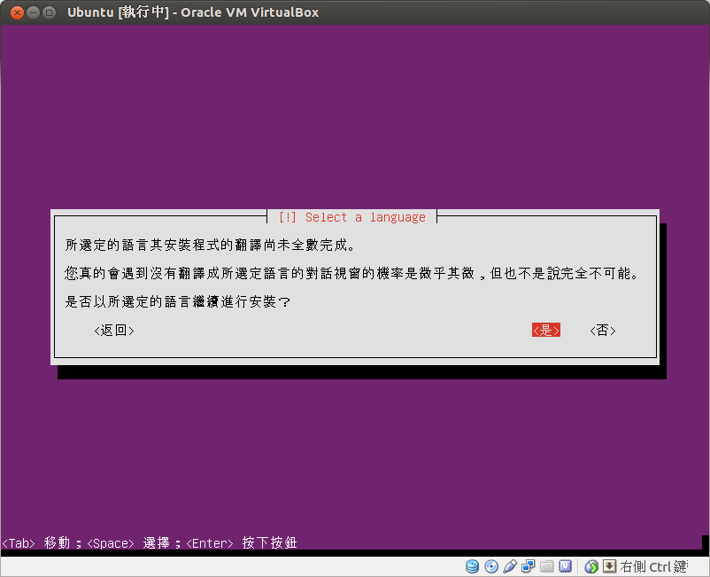

透過網路自動安裝 Ubuntu 12.04
- 首先要確定有線網路可以使用 DHCP 自動取得 IP 以及連上 Internet
- 從這裡下載 mini.iso
- 將隨身碟接上有裝 Ubuntu 的電腦，然後執行 `sudo su -c "cat mini.iso > /dev/sdb"`，其中 /dev/sdb 依實際情況調整
- 將隨身碟接上想要安裝 Ubuntu 的電腦，利用 BIOS 開機選單從隨身碟開機
- 按下 Tab 鍵輸入 'auto=true preseed/url=fourdollars.github.com' 後按下 Enter 鍵
- 決定自己的 hostname

- 沒有完整的正體中文翻譯沒關係就先跳過

- 然後就是放著讓它自己安裝完，最快約40分鐘左右，依網路頻寬跟速度決定。
- 最後是選擇要將 GRUB 安裝在哪裡，一般都是安裝在 /dev/sda 上面。
- 安裝完成後就會自動關機。
第一次啟動系統才會進行一連串的設定